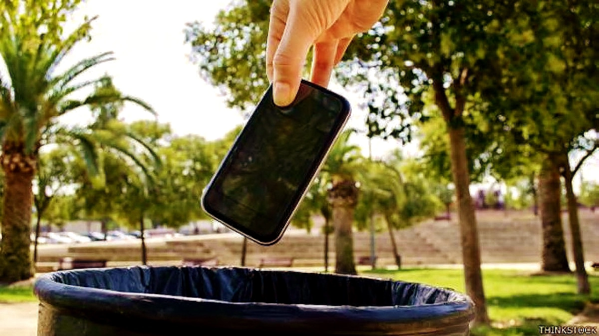

¿Cómo es el proceso de reciclado de los móviles?
Regresar a la pagina principal
La mayor parte de los materiales obtenidos después del reciclaje de un smartphone son diferentes tipos de plásticos, vidrio y por último varios tipos de metales pesados. Todo ello debe ser separado. Así que una vez llega a la planta de reciclado, se clasifican y se separan los diferentes materiales.
Posteriormente, se trituran y se someten a un proceso de separación que utiliza calor e imanes. Esto clasifica los materiales según sus diferentes propiedades.
Los materiales ya están separados y listos para ser usados de nuevo.

¿Qué se hace con ello después?
Los metales suelen ser usados para nuevos aparatos electrónicos. Los vidrios pueden usarse también con este fin o incluso para hacer envases. Por último, el plástico, también se reutilizará con los mismos fines, crear nuevos envases o productos.
Evitemos que los teléfonos móviles terminen en los vertederos. Con su reciclaje pueden recuperarse materiales muy escasos y necesarios para su fabricación (como por ejemplo el coltán). Además, frenaremos su acumulación en vertederos, evitando dañar espacios naturales y la expulsión de materiales tóxicos por parte de los productos.
De este modo ahorraremos mucha agua y energía.
Regresar a la pagina principal